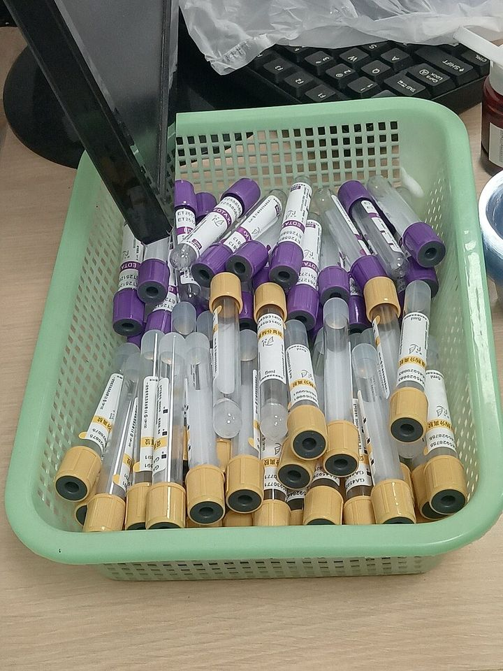

健康診断の結果の見方：数値の意味と再検査の目安（判定値の一覧つき）
要点まとめ
健康診断の結果票には、数値と「要再検査」などの判定が並んでいます。この記事では、数値の目安と再検査・受診の考え方を、厚生労働省の「標準的な健診・保健指導プログラム（令和6年度版）」[5]や各学会の基準でまとめました。
この記事の使い方
この記事は、結果票を読むための目安をまとめたもので、診断の代わりにはなりません。厚生労働省のプログラムも、受診勧奨判定値を超えた場合、再検査や生活習慣の改善の指導を含めて、医療機関での管理が必要な場合があるとしています[1]。結果票のコメントや、医師・保健師の説明を優先してください。

受けた健診の種類を確かめる
| 種類 | 根拠・対象 | 主な項目 |
|---|---|---|
| 定期健康診断 | 労働安全衛生法。会社が、常時使用する労働者に1年以内ごとに1回行う[3] | 既往歴、身長・体重・腹囲・視力・聴力、胸部X線、血圧、貧血、肝機能、血中脂質、血糖、尿、心電図など[3] |
| 特定健診 | 医療保険者が、40〜74歳の加入者に毎年度行う[6] | 腹囲・BMI、血圧、肝機能、血中脂質、血糖、尿など。医師が必要と判断すると心電図・眼底・貧血・血清クレアチニンも[6][7] |
| 人間ドック | 日本人間ドック・予防医療学会が、基本の検査項目と判定区分を定めている[8][9] | 上の項目に加え、腹部超音波・胃のX線・眼底・眼圧・尿酸・便潜血など（日本人間ドック・予防医療学会の基本項目）[8] |
会社の定期健康診断を受けると、特定健診の全部または一部を受けたことになり、記録は保険者に渡されます[10]。
2027年4月から、腎臓の検査が加わる
血清クレアチニンが加わり、喀痰の検査はなくなる
厚生労働省は、長時間労働と慢性腎臓病の関係や、今の項目では見つけられない腎機能の低下を把握できることを、追加の理由に挙げています[4]。肝機能の検査の名前も、GOT・GPT・γ-GTPから、AST・ALT・γ-GTに変わります[4]。
問診票に、女性の健康の質問が加わった
回答は任意で、個人の回答は会社に渡らない
2026年4月の通達で、一般健康診断の問診票に「女性特有の健康課題（月経困難症、月経前症候群、更年期障害など）で職場において困っていることがありますか」という質問が加わりました[10]。事業者に義務づけられたものではなく、回答も任意です[12]。健診機関から会社や保険者に、個人の回答が渡されることはありません[10]。厚生労働省は2026年1月に、健診機関向けと事業者向けのマニュアルを公表しています[13]。
判定の言葉と「基準範囲」の意味
| 資料 | 判定の言葉 |
|---|---|
| 厚生労働省の指針 | 異常なし・要観察・要医療などの区分[14] |
| 日本人間ドック・予防医療学会（2026年4月改定） | A 異常なし／B 軽度異常／C 要再検査・生活改善／D 要精密検査・治療／E 治療中[9] |
言葉は結果票によって違います。法令で統一された定義は見つかりませんでした。
「経過観察」より、「何か月後に再検査」
人間ドック学会は、再検査の時期をはっきり書く方針に
日本人間ドック・予防医療学会は、2026年4月の改定で「C 要経過観察」の書き方を改め、「Xか月後」など再検査の時期を書いて、受診者がすることをはっきり示すとしました[9]。「経過観察」「症状あれば受診」のようなあいまいな書き方はしないとしています[9]。血圧は、健診機関での再検査より、家庭での血圧測定をすすめています[9]。
基準範囲は、健康な人の真ん中95%
基準範囲の中でも、判定値を超えることがある
日本臨床検査標準協議会（JCCLS）は、基準範囲を、健康な人の測定値の真ん中95%が入る範囲としています[2]。基準範囲は値を読むための目安で、それだけでは診断や治療の根拠にならないとしています[2]。そのため、基準範囲の中でも、生活習慣病を防ぐための判定値を超えることがあります。
| 項目 | 基準範囲 | 保健指導判定値 | 受診勧奨判定値 |
|---|---|---|---|
| LDLコレステロール（mg/dL） | 65〜163 | 120以上 | 140以上 |
| HbA1c（%） | 4.9〜6.0 | 5.6以上 | 6.5以上 |
| ALT（U/L） | 男性10〜42、女性7〜23 | 31以上 | 51以上 |
出典: 基準範囲はJCCLSの共用基準範囲[2]、判定値は厚生労働省のプログラム（令和6年度版）[1]。
項目ごとの判定値
厚生労働省のプログラムは、項目ごとに、生活習慣の改善の指導の対象になる「保健指導判定値」と、医療機関の受診をすすめる「受診勧奨判定値」を決めています[1]。判定値は、関係する学会のガイドラインと合わせて決められています[7]。
| 項目 | 保健指導判定値 | 受診勧奨判定値 |
|---|---|---|
| 血圧（上／下、mmHg） | 130以上／85以上 | 140以上／90以上 |
| 中性脂肪（mg/dL） | 空腹時150以上、随時175以上 | 300以上 |
| HDLコレステロール（mg/dL） | 40未満 | （なし） |
| LDLコレステロール（mg/dL） | 120以上 | 140以上 |
| Non-HDLコレステロール（mg/dL） | 150以上 | 170以上 |
| 空腹時血糖（mg/dL） | 100以上 | 126以上 |
| HbA1c（%） | 5.6以上 | 6.5以上 |
| AST・ALT（U/L） | 31以上 | 51以上 |
| γ-GT（U/L） | 51以上 | 101以上 |
| eGFR（腎臓の働き） | 60未満 | 45未満 |
| ヘモグロビン（g/dL） | 男性13.0以下、女性12.0以下 | 男性12.0以下、女性11.0以下 |
出典: 厚生労働省「標準的な健診・保健指導プログラム（令和6年度版）」第2編別紙5[1]。日本動脈硬化学会の診断基準（2022年版）でも、LDLコレステロール140mg/dL以上は高LDLコレステロール血症です[15]。
HbA1cは、過去1〜2か月の血糖の目安
空腹時血糖とあわせて測るのが望ましい
厚生労働省のプログラムは、HbA1cを、過去1〜2か月の血糖値を反映した指標とし、空腹時血糖と両方を測るのが望ましいとしています[7]。空腹時の採血は、10時間以上食事をとらない状態で行います[7]。
eGFRは、腎臓の働きの「百分率」と考える
健康な場合はおよそ100
eGFRは、血清クレアチニンと年齢・性別から計算する、腎臓の働きの目安です。健康な場合はおよそ100なので、健康な人に比べた腎臓の働きの百分率（%）と考えると分かりやすいと、厚生労働省のプログラムは説明しています[1]。
腹囲とBMIは、特定保健指導の入り口
腹囲は男性85cm・女性90cm以上、またはBMI25以上
特定保健指導の対象は、まず腹囲（男性85cm以上、女性90cm以上）か、腹囲がそれ未満でBMIが25以上かで分けます[16]。そのうえで、血圧・脂質・血糖の判定値と喫煙の数で、「積極的支援」「動機付け支援」が決まります[16]。
尿酸は、人間ドック学会の区分を目安に
7.0以下がA、9.0以上はD（要精密検査・治療）
厚生労働省のプログラムの判定値の表には、尿酸は載っていません。日本人間ドック・予防医療学会の判定区分では、尿酸は2.1〜7.0mg/dLがA（異常なし）、7.1〜7.9がB（軽度異常）、8.0〜8.9がC、9.0以上がD（要精密検査・治療）です[9]。学会のガイドライン（第1版、2002年）は、7.0mg/dLを超えるものを高尿酸血症としています[19]。
すぐ受診する目安
厚生労働省のプログラムの「フィードバック文例集」は、判定値を超えた人への伝え方を、すぐに受診をすすめる場合と、まず生活習慣を見直す場合に分けています[1]。
| 項目 | すぐに受診 | 生活習慣を見直す |
|---|---|---|
| 血圧 | 160/100以上 | 140〜159/90〜99は、改善しなければ受診 |
| 脂質 | LDL180以上か、中性脂肪500以上（早期に受診） | LDL140〜179か、中性脂肪300〜499は、改善の努力をしたうえで受診 |
| 血糖 | 空腹時血糖126以上か、HbA1c6.5%以上（治療していない人） | ― |
| 肝臓 | AST・ALT51以上か、γ-GT101以上（受診） | AST・ALT31〜50、γ-GT51〜100 |
| 腎臓 | eGFR45未満か、尿蛋白1+以上 | eGFR45以上60未満で尿蛋白が陰性 |
出典: 厚生労働省「標準的な健診・保健指導プログラム（令和6年度版）」のフィードバック文例集[1]。血糖は、定期的に受診していなければすぐ受診、という書き方です[1]。協会けんぽも、血圧160/100以上、空腹時血糖126以上、LDL180以上などの人に受診をすすめています[20]。
血圧：140/90以上は、まず1か月程度の見直し
160/100以上の人は、脳卒中などに約5倍かかりやすい
日本高血圧学会は、140〜159/90〜99mmHgは1か月程度生活習慣を見直し、下がらなければ受診を、160/100以上はすぐに受診をすすめています[21]。厚生労働省の文例は、160/100以上の人は、120/80未満の人に比べて約5倍、脳卒中や心臓病にかかりやすいとしています[1]。
血糖：「糖尿病型」が1つだけなら、1か月以内に再検査
日本糖尿病学会の診断の流れ
日本糖尿病学会は、空腹時血糖126mg/dL以上などの「糖尿病型」とHbA1c6.5%以上の両方がそろうと、糖尿病と診断するとしています[25]。どちらか一方だけなら、なるべく1か月以内に再検査をします[25]。
肝臓：ALTが30を超えたら、かかりつけ医へ
日本肝臓学会の「奈良宣言2023」
日本肝臓学会は、健康診断でALTが30を超えていたら、まずかかりつけ医などを受診するよう呼びかけています[26]。厚生労働省の受診勧奨判定値（51以上）より低い値です[1]。

再検査と、会社の義務・給付
- 健診
会社の定期健康診断を受ける
- 通知
会社は、結果を遅滞なく本人に知らせる
- 受診
判定に応じて、再検査・精密検査・受診をする
会社は受診をすすめるのが適当とされる[14]
- 3か月以内
異常があった人について、会社が医師の意見を聴く
- 3か月以内
条件に当たれば、二次健康診断等給付を請求する
一次健診の受診日から[28]
再検査は、会社の一律の義務ではない
ただし、会社は受診をすすめるのが適当とされる
厚生労働省の指針は、再検査や精密検査は一律に事業者に義務づけられたものではないとしたうえで、受診をすすめ、結果を意見を聴く医師に出すよう働きかけるのが適当としています[14]。会社は、医師の意見をふまえて、必要なら就業場所の変更、労働時間の短縮、深夜業の回数を減らすなどの措置をとります[27]。
4つすべてに異常があれば、二次健診が無料
労災保険の「二次健康診断等給付」
会社の定期健康診断などで、血圧・血中脂質・血糖・腹囲またはBMIのすべてに異常の所見があると診断された人は、労災保険の二次健康診断等給付を受けられます[28]。脳・心臓の病気の症状がないことなどが条件で、一次健診の受診日から3か月以内に請求します[28]。
データで見る健康診断
見方: 有所見率は、定期健康診断を受けた人のうち、異常の所見があった人の割合です[30]。2025年（令和7年）の全国の有所見率は59.7%（前年は59.4%）で、項目別では血中脂質が30.7%で最も高くなっています[31][29]。受診者は約1,323万人でした[32]。
特定保健指導を受けた人は、対象の3割弱
特定健診の実施率は61.5%（2024年度）
2024年度の特定健診の実施率は61.5%、特定保健指導の実施率は28.9%でした[33][34]。特定保健指導の実施率は、2026年10月29日に28.3%から28.9%に訂正されています[34]。国は2029年度までに、特定健診70%以上、特定保健指導45%以上を目標にしています[33]。
今回確認できなかった点
- 日本高血圧学会「高血圧管理・治療ガイドライン2025」の血圧の分類の、学会の原文（自治体の資料で確認した）
- 高尿酸血症の定義の、現行の第3版のガイドラインの原文
- 女性の健康の問診を、いつから問診票で使うかの日付
- 「要経過観察」「要再検査」などの言葉の、公的に統一された定義
- 再検査をいつまでに受けるかの、すべての項目に共通する公的な期限
- 受診をすすめる値なのに受診しない人の、全国の割合
出典（35件）
閲覧日はいずれも2026年11月10日
- 標準的な健診・保健指導プログラム（令和6年度版）第2編 別紙5（健診検査項目の判定値、フィードバック文例集など）（PDF）（厚生労働省）
- 日本における主要な臨床検査項目の共用基準範囲（解説書、2022年10月31日、PDF）（日本臨床検査標準協議会（JCCLS））
- 労働安全衛生規則（e-Gov法令検索）
- 労働安全衛生規則等の一部を改正する省令の施行等について（基発0428第9号、2026年4月28日、PDF）（厚生労働省 労働基準局長（岡山労働局掲載））
- 標準的な健診・保健指導プログラム（令和6年度版）（厚生労働省）
- 特定健康診査及び特定保健指導の実施に関する基準（e-Gov法令検索）
- 標準的な健診・保健指導プログラム（令和6年度版）第2編第2章 健診の内容（PDF）（厚生労働省）
- 2026年度 一日ドック基本検査項目表（PDF）（日本人間ドック・予防医療学会）
- 判定区分（2026年4月1日改定）（PDF）（日本人間ドック・予防医療学会）
- 定期健康診断等及び特定健康診査等の実施に係る事業者と保険者の連携・協力事項について（一部改正、2026年4月28日、PDF）（厚生労働省 労働基準局長・保険局長）
- 定期健康診断等の診断項目の取扱いが一部変更になります（令和9年4月から適用）（PDF）（厚生労働省・都道府県労働局・労働基準監督署）
- 女性特有の健康課題に関する問診に係る健診機関実施マニュアル（PDF）（厚生労働省）
- 女性特有の健康課題に関する問診のマニュアルを公表します（厚生労働省）
- 健康診断結果に基づき事業者が講ずべき措置に関する指針（PDF）（厚生労働省）
- 動脈硬化性疾患予防ガイドライン2022年版 第2章（PDF）（日本動脈硬化学会）
- 標準的な健診・保健指導プログラム（令和6年度版）第2編第3章 保健指導対象者の選定と階層化（PDF）（厚生労働省）
- 標準的な健診・保健指導プログラム（令和6年度版）第3編第2章（PDF）（厚生労働省）
- 肥満と肥満症について（日本肥満学会）
- Guidelines for the Management of Hyperuricemia and Gout, Abridged Edition（第1版、PDF）（日本痛風・核酸代謝学会（現 日本痛風・尿酸核酸学会））
- 重症化予防（受診勧奨）（全国健康保険協会（協会けんぽ））
- 血圧に関する大切なお知らせ「140/90といわれたら」（2024年6月7日）（日本高血圧学会）
- ガイドライン（高血圧管理・治療ガイドライン2025）（日本高血圧学会）
- 高血圧の10のファクト～国民の皆さんへ～（日本高血圧学会）
- 健康教育資料「私の血圧値はどの段階？」（日本高血圧学会「高血圧管理・治療ガイドライン2025」を参考、PDF）（上越市）
- 糖尿病診療ガイドライン2024 第1章 糖尿病診断の指針（PDF）（日本糖尿病学会）
- 奈良宣言2023 リーフレット（PDF）（日本肝臓学会）
- 労働安全衛生法（e-Gov法令検索）
- 二次健康診断等給付の請求手続（PDF）（厚生労働省・都道府県労働局・労働基準監督署）
- 業務上疾病発生状況等調査（令和7年）第7表 定期健康診断実施結果（年次別）（Excel）（厚生労働省）
- 定期健康診断結果報告：集計結果（用語の解説）（厚生労働省）
- 業務上疾病発生状況等調査（令和7年）（厚生労働省）
- 業務上疾病発生状況等調査（令和7年）第8表 定期健康診断実施結果（業種別）（Excel）（厚生労働省）
- 2024年度 特定健康診査・特定保健指導の実施状況（概要）（PDF）（厚生労働省）
- 2024年度 特定健診・特定保健指導の実施状況の訂正について（PDF）（厚生労働省）
- 健診後の未治療者の医療機関受診状況の実態把握（2026年5月13日、PDF）（協会けんぽ 京都支部）
写真・画像の出典（2件）
- 血圧の測定（イメージ）
写真: rawpixel.com／Wikimedia Commons（CC0） - 採血管（イメージ）
写真: Fumikas Sagisavas／Wikimedia Commons（CC0）